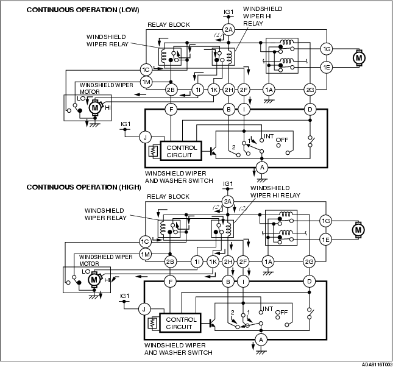
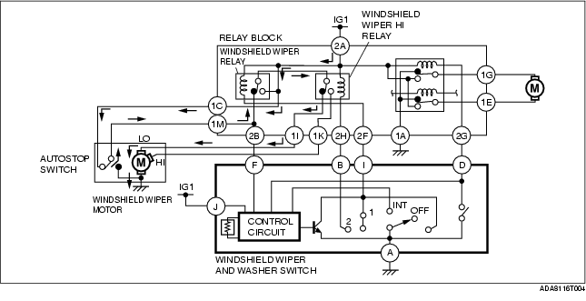
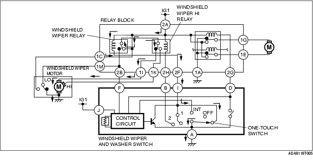

1. When the windshield wiper switch moves to the 1 (low) position, current (1) flows to the windshield wiper relay in the relay block, turning on the windshield wiper relay.
2. When the windshield wiper relay is on, current flows to the windshield wiper motor for wiper operation at low speed.
3. When the windshield wiper switch moves to the 2 (high) position, current (2) flows to the windshield wiper relay and windshield wiper HI relay in the relay block, turning on the windshield wiper relay and windshield wiper HI relay.
4. When the windshield wiper relay and windshield wiper HI relay are on, current flows to the windshield wiper motor for wiper operation at high speed.
5. When the windshield wiper switch returns to the OFF position, the autostop function activates and the wipers stop at the park position.



1. When the windshield wiper switch moves to the INT position, current (1) flows from the control circuit in the windshield wiper switch to the windshield wiper motor for wiper operation at low speed.
2. When the preset period of time has elapsed, current from the control circuit stops flowing. Consequently, current to the windshield wiper motor stops, and the wipers stop in the park position by the autostop operation. The wipers operate at specified intervals cycling through this sequence of operations.
3. Optional wiper speed interval settings are provided according to INT volume.
1. When the windshield washer switch turns on, current (1) flows to the washer relay (windshield) in the relay block, turning on the washer relay (windshield).
2. When the washer relay (windshield) is on, the washer motor operates and sprays washer fluid from the windshield washer nozzles. Simultaneously, the transistor turns on by the washer motor operation signal sent to the control circuit. Consequently, current (2) flows to the windshield wiper relay in the relay block, turning on the windshield wiper relay.
3. When the windshield wiper relay is on, the windshield wiper motor operates at low speed.